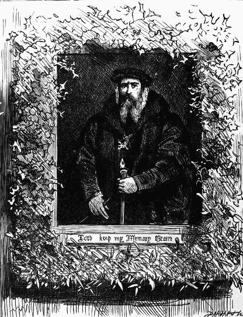
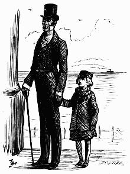
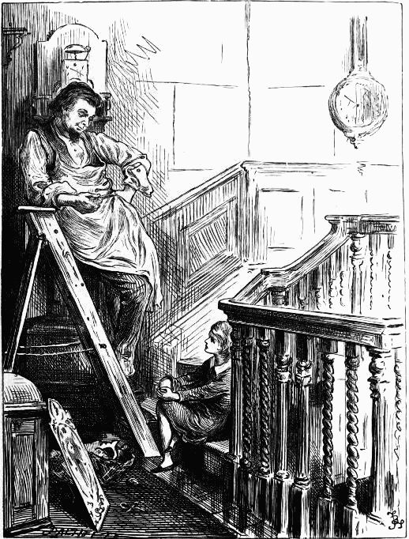
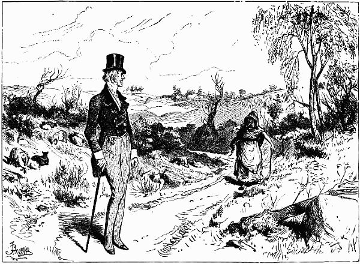
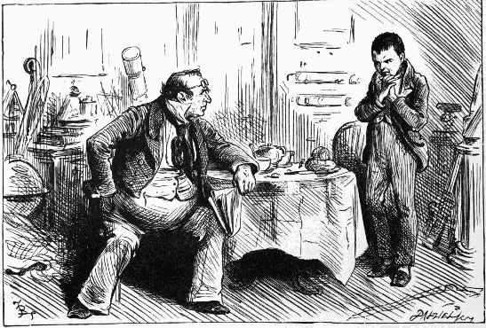
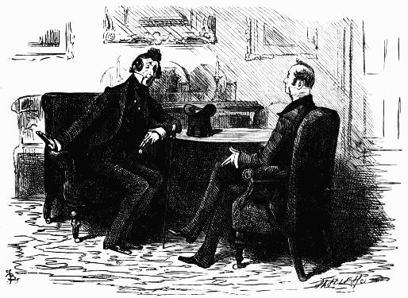
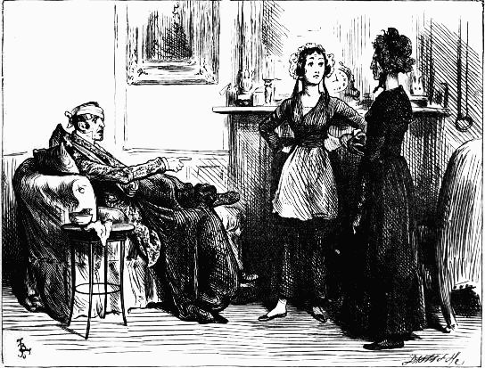
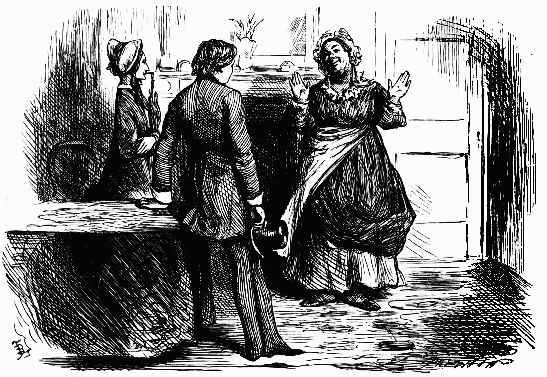

 The sedate face in the portrait, with the beard and ruff, looked down at them—The Haunted Man, chap. iii.
EIGHT ILLUSTRATIONS
BY GORDON THOMSON
The Malle Post—Going Through France
Playing at Mora—Genoa and its Neighbourhood
The Church and the World—To Parma, Modena, and Bologna
An Italian Dream
A sketch at the carnival—Rome
Artists' models—Rome
Priests and monks—A Rapid Diorama

SIXTY-TWO ILLUSTRATIONS
BY FRED BARNARD
A thorough contrast in all respects to Mr. Dombey—Chap. ii.
"I may be fond of pennywinkles, Mrs. Richards, but it don't follow that I'm to have 'em for tea"—Chap. iii.
"So here's to Dombey—and son—and daughter"—Chap. iv.
Mr. Dombey dismounting first to help the ladies out—Chap. v.
"Why, what can you want with Dombey and Son's!" . . . "To know the way there, if you please."—Chap. vi.
Florence obeyed as fast as her trembling hands would allow; keeping, all the while, a frightened eye on Mrs. Brown—Chap. vi.
 Dombey and Son—Chap. viii.
Dombey and Son—Chap. viii.
Listening to the sea—Chap. viii.
 And when he got there, sat down in a chair, and fell into a silent fit of laughter with which he was sometimes seized, and which was always particularly awful—Chap. x.
And when he got there, sat down in a chair, and fell into a silent fit of laughter with which he was sometimes seized, and which was always particularly awful—Chap. x.
When the doctor smiled auspiciously at his author, or knit his brows, or shook his head and made wry faces at him, as much as to say, "Don't tell me, sir; I know better," it was terrific—Chap. xi.
"Your father's regularly rich, ain't he!" inquired Mr. Toots. "Yes, sir," said Paul; "He's Dombey and Son"—Chap. xii.
"You respect nobody, Carker, I think," said Mr. Dombey. "No!" inquired Carker, with another wide and most feline show of his teeth—Chap. xiii.
During this conversation, Walter had looked from one brother to the other with pain and amazement—Chap. xiii.
 Paul also asked him, as a practical man, what he thought about King Alfred's idea of measuring time by the burning of candles, to which the workman replied that he thought it would be the ruin of the clock trade if it was to come up again—Chap. xiv.
The breaking-up party at Doctor Blimber's—Chap. xiv.
Before they had gone very far, they encountered a woman selling flowers: when the captain, stopping short, as if struck by a happy idea, made a purchase of the largest bundle in her basket—Chap. xv.
All this time, the bereaved father has not been seen even by his attendant; for he sits in a corner of his own dark room—Chap. xviii.
It was repeated often—very often, in the shadowy solitude; and broken murmurs of the strain still trembled on the keys, when the sweet voice was hushed in tears—Chap. xviii.
Took Uncle Sol's snuff-coloured lappels, one in each hand; kissed him on the cheek, etc.—Chap. xix.
"Take advice from plain old Joe, and never educate that sort of people, sir," returned the major. "Damme, sir, it never does! It always fails!"—Chap. xx. 
Withers the Wan, at this period, handing round the tea, Mr. Dombey again addressed himself to Edith—Chap. xxi.
"Do you know that there is some one here!" she returned, now looking at him steadily—Chap. xxxvi.
 "Let you alone!" said Mr. Carker. "What! I have got you, have I!" There was no doubt of that, and tightly too. "You dog," said Mr. Carker, through his set jaws, "I'll strangle you!"—Chap. xxii.
"Let you alone!" said Mr. Carker. "What! I have got you, have I!" There was no doubt of that, and tightly too. "You dog," said Mr. Carker, through his set jaws, "I'll strangle you!"—Chap. xxii.
"What do you want with Captain Cuttle, I should wish to know!" said Mrs. Macstinger. "Should you! Then I'm sorry that you won't be satisfied," returned Miss Nipper—Chap. xxiii.
The flowers were scattered on the ground like dust; the empty hands were spread upon the face; and orphaned Florence, shrinking down upon the ground, wept long and bitterly—Chap. xxiv.
The Captain's voice was so tremendous, and he came out of his corner with such way on him, that Rob retreated before him into another corner; holding out the keys and packet, to prevent himself from being run down—Chap. xxv.
 "Go and meet her!"—Chap. xxvii.
"Thank you. I have no desire to read it," was her answer—Chap. xxvi.
"A child!" said Edith, looking at her. "When was I a child! What childhood did you ever leave to me!"—Chap. xxviii.
Lucretia Tox's reverie—Chap. xxix.
One of the very tall young men on hire, whose organ of veneration was imperfectly developed, thrusting his tongue into his cheek, for the entertainment of the other very tall young man on hire, as the couple turned into the dining-room—Chap. xxx.
She started, stopped, and looked in—Chap. xxx.
In a firm, free hand, the bride subscribes her name in the register—Chap. xxxi.
"Go," said the good-humoured manager, gathering up his skirts, and standing astride on the hearth-rug, "like a sensible fellow, and let us have no turning out, or any such violent measures"—Chap. xxxii.
And reading softly to himself, in the little back parlour, and stopping now and then to wipe his eyes, the Captain, in a true and simple spirit, committed Walter's body to the deep—Chap. xxxii.
A certain skilful action of his fingers as he hummed some bars, and beat time on the seat beside him, seemed to denote the musician—Chap. xxxiii.
"She's come back harder than she went!" cried the mother, looking up in her face, and still holding to her knees—Chap. xxxiv.
Withers, meeting him on the stairs, stood amazed at the beauty of his teeth, and at his brilliant smile—Chap. xxxvii.
Ran sniggering off to get change, and tossed it away with a pieman—Chap. xxxviii.
"And you're a-going to desert your colours, are you, my lad," said the captain, after a long examination of his face—Chap. xxxix. 
Mr. Toots replies by launching wildly out into Miss Dombey's praises, and by insinuations that sometimes he thinks he should like to blow his brains out—Chap. xli.
"Dombey," says Cousin Feenix, "upon my soul, I am very much shocked to see you on such a melancholy occasion"—Chap. xli. 
 "Do you call it managing this establishment, madam," said Mr. Dombey, "to leave a person like this at liberty to come and talk to me!"—Chap. xliv.
"Miss Dombey," returned Mr. Toots, "if you'll only name one, you'll—you'll give me an appetite. To which," said Mr. Toots, with some sentiment, "I have long been a stranger"—Chap. xliv.
Flung it down, and trod upon the glittering heap—Chap. xlvii.
Thrown down in a costly mass upon the ground was every ornament she had had since she had been his wife; every dress she had worn; and everything she had possessed—Chap. xlvii.
Florence made a motion with her hand towards him, reeled and fell upon the floor—Chap. xlviii.
When he had filled his pipe in an absolute reverie of satisfaction, Florence lighted it for him—Chap. xlix.
Blessed twilight stealing on, and shading her so soothingly and gravely as she falls asleep, like a hushed child, upon the bosom she has clung to!—Chap. l.
It appears that he met everybody concerned in the late transaction, everywhere, and said to them, "Sir," or "Madam," as the case was, "Why do you look so pale!" at which each shuddered from head to foot, and said, "Oh, Perch!" and ran away—Chap. li.
 D. I. J. O. N—Chap. lii.
D. I. J. O. N—Chap. lii.
Still upon her knees, and with her eyes upon the fire—Chap. liii.
He saw the face change from its vindictive passion to a faint sickness and terror—Chap. lv.
After this, he smoked four pipes successively in the little parlour by himself, and was discovered chuckling at the expiration of as many hours—Chap. lvi.
 "Wy, it's mean . . . . that's where it is. It's mean!"—Chap. lvi.
"Wy, it's mean . . . . that's where it is. It's mean!"—Chap. lvi.
"Joe had been deceived, sir, taken in, hoodwinked, blindfolded, but was broad awake again, and staring"—Chap. lviii.
"Yes, Mrs. Pipchin, it is," replies cook, advancing. "And what then pray!"—Chap. lix.
"Oh, my God, forgive me, for I need it very much!"—Chap. lix.
"No, no!" cried Florence, shrinking back as she rose up, and putting out her hands to keep her off. "Mamma!"—Chap. lxi.
Captain Cuttle gives them the Lovely Peg—Chap. lxii.
 "Dear Grandpapa, why do you cry when you kiss me?"—Chap. lxii.
"Dear Grandpapa, why do you cry when you kiss me?"—Chap. lxii.
SIXTY-ONE ILLUSTRATIONS
BY FRED BARNARD
Peggotty seemed to swell and grow immensely large. I propped my eyelids open with my two forefingers and looked perseveringly at her, as she sat at work—Chap. ii.
"Dead, Mr. Peggotty!" I hinted, after a respectful pause.
"Drowndead," said Mr. Peggotty—Chap. iii.
"That's not it!" said I, "that ship-looking thing!" "That's it, Mas'r Davy," returned Ham—Chap. iii.
And when we came at last to the five thousand cheeses (canes he made it that day, I remember), my mother burst out crying—Chap. iv.
I saw to my amazement, Peggotty burst from a hedge and climb into the cart—Chap. v.
"He knows me, and I know him. Do you know me! Hey!" said Mr. Creakle, pinching my ear with ferocious playfulness—Chap. vi.
"Let him deny it," said Steerforth—Chap. vii.
"Don't go, Steerforth, if you please. These are two Yarmouth boatmen—very kind, good people—who are relations of my nurse, and have come from Gravesend to see me"—Chap. vii.
"Father!" said Minnie playfully. "What a porpoise you do grow!"—Chap. ix.
I begin life on my own account, and don't like it—Chap. xi.
I am presented to Mrs. Micawber—Chap. xi.
The young man still replied: "Come to the pollis!" and was dragging me against the donkey in a violent manner, as if there were any affinity between that animal and a magistrate—Chap. xii. 
"Oh, my lungs and liver, will you go for threepence!"—Chap. xiii.
 Mr. Micawber, impressing the names of the streets and the shapes of corner houses upon me as we went along, that I might find my way back easily in the morning—Chap. xi.
Mr. Micawber, impressing the names of the streets and the shapes of corner houses upon me as we went along, that I might find my way back easily in the morning—Chap. xi.
The battle on the green—Chap. xiv.
She always roused him with a question or caress—Chap. xv.
"Oh, thank you, Master Copperfield," said Uriah Heep, "for that remark! it is so true! 'umble as I am, I know it is so true! Oh, thank you, Master Copperfield!"—Chap. xvi.
The doctor's walk—Chap. xvii.
"I ask an inestimable price for it, Miss Larkins" . . . . "Indeed! what is that!" returns Miss Larkins. "A flower of yours, that I may treasure it as a miser does gold"—Chap. xviii.
"Oh, really! you know how ignorant I am, and that I only ask for information, but isn't it always so! I thought that kind of life was on all hands understood to be—eh!"—Chap. XX.
Presently they brought her to the fireside, very much confused, and very shy—Chap. xxi.
 "That is a black shadow to be following the girl," said Steerforth, standing still; "what does it mean!"—Chap. xxii.
"That is a black shadow to be following the girl," said Steerforth, standing still; "what does it mean!"—Chap. xxii.
"Trot! my dear Trot!" cried my aunt, in a terrified whisper, and pressing my arm. "I don't know what to do"—Chap, xxiii.
 And Mrs. Crupp said, thank heaven she had now found summun she could care for—Chap. xxiii.